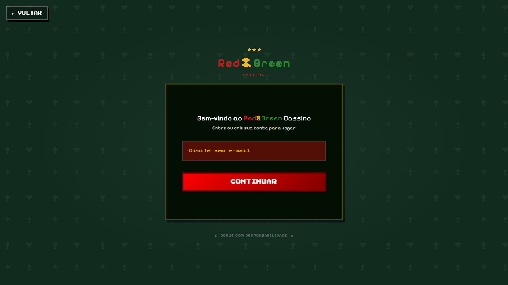
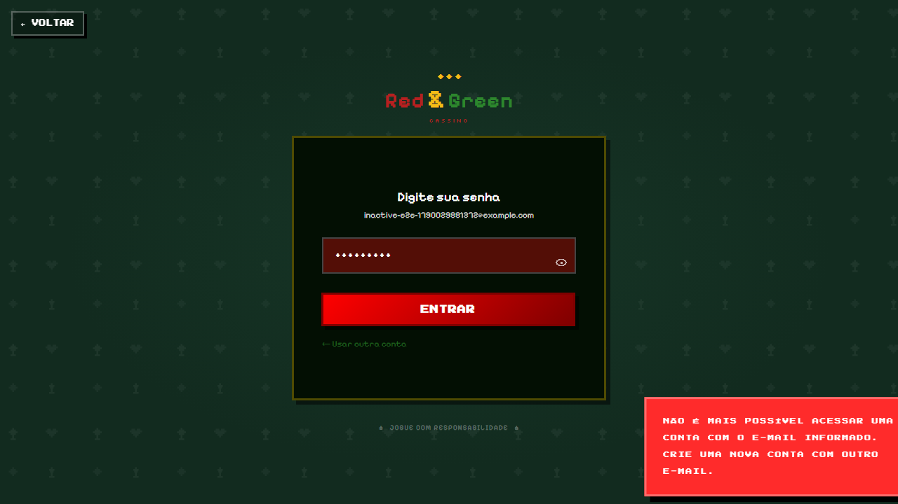
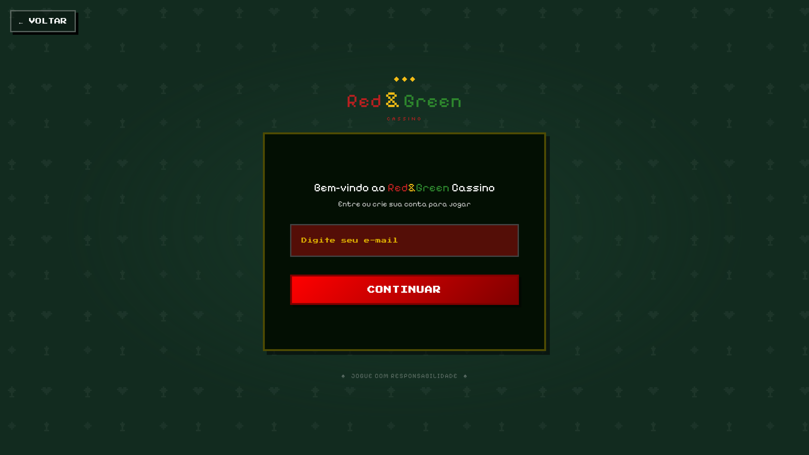
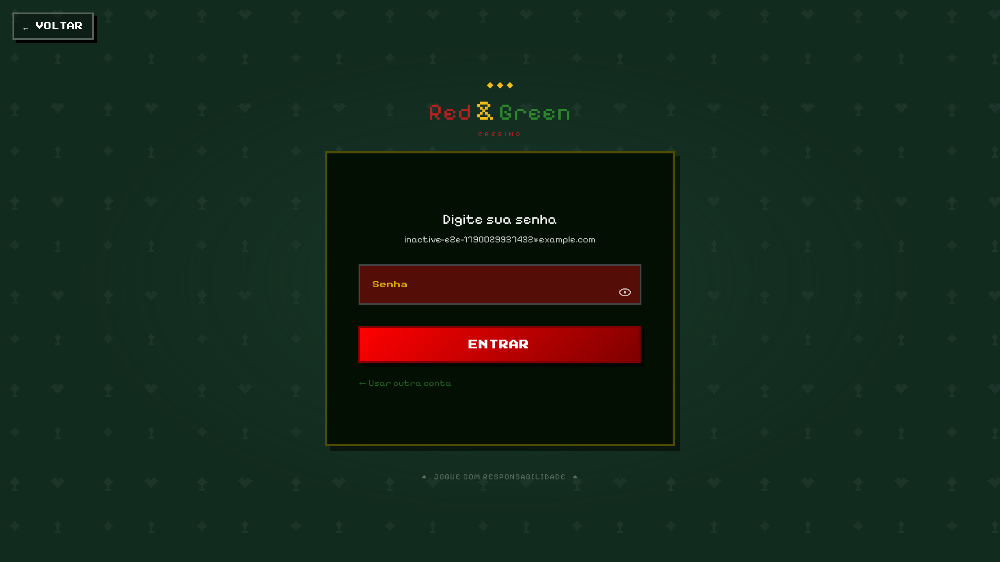
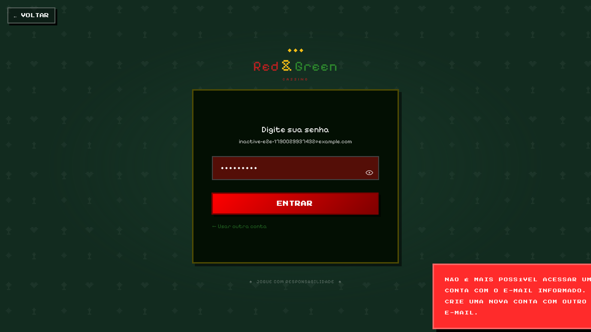

shows the inactive-account message when login is rejected chromium


TC-008 - Unhappy Path
e2e/TC-008.spec.ts| Caso | Navegador | Resultado | Tentativas | Duracao |
|---|---|---|---|---|
| shows the inactive-account message when login is rejected | chromium | Aprovado | 1 | 1.9s |
| shows the inactive-account message when login is rejected | firefox | Aprovado | 1 | 1.9s |
| shows the inactive-account message when login is rejected | webkit | Aprovado | 1 | 3.6s |




